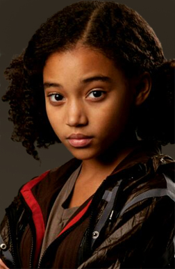
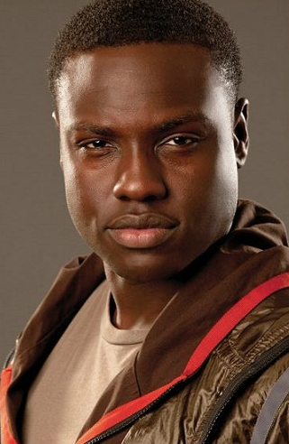

Tributes are chosen for the Hunger Games every year lottery style during the reaping ceremony. Two large glass balls contain slips of paper with the names of each child citizen of their district through the ages of 12-18. The district's representative/escort picks a name out of the balls, one of the glass balls are for girls and the other one are for boys. The tributes whose names are chosen are then entered into the Hunger Games unless someone is willing to volunteer as tribute- a normally quite rare occasion unless it is in one of the "Career Districts", in which children have been training their whole lives at a special school to enter the Games. The one exception to the traditional one boy, one girl per district, a total of twenty-four reaped tributes rule was the 50th Hunger Games, the Second Quarter Quell. In these games, each District were required to double the amount of tributes and reap two girls and two boys for a total of 48tributes to complete. Victors from previous Hunger Games are no longer eligible to be reaped or volunteer for subsequent games, even if they are still age eligible.The exception being the 75th Hunger Games, the Third Quarter Quell, where the reaping pool of potential tributes was restricted only to each district's existing victors. After the reaping, tributes then aboard a train headed to the Capitol. When they arrive at the Capitol, tributes attend the opening ceremony riding on chariots in costumes that represent their District. The week after the opening ceremonyt, tributes are to attend training sessions that help prepare them for the games. After the tributes finish their week of training, they must attend a private session with the gamemakers. During their private session, tributes are given a score according to their skill levels. Their scores are then broadcasted to all of Panem. Tributes must then attend an interview. Interviews are hosted by Ceaser Flickerman and is also the time for tributes to try to get sponsors. 2 days after the interview, tributes are sent to the arena, where they must battle to the death until there's one tribute remaining. The last tribute remainging is the victor and gets to live in Victor's Village, as well, the winning District gets food sent from the Capitol until the next Hunger Games.
| Name | Age | Gender | Height | Home | Weapon(s) of Choice | Fate | Portrayed By | Picture |
|---|---|---|---|---|---|---|---|---|
| Glimmer | 17 | Female | 5'7" | District 1 | Bow and Arrow, Knife, Sword | Deceased | Leven Rambin | |
| Marvel | 17 | Male | 6'3" | District 1 | Spear, Kukri, Throwing Axe | Deceased | Jack Quaid | |
| Clove | 15 | Female | 5'4" | District 2 | Throwing Knife | Deceased | Isabelle Fuhrman | |
| Cato | 18 | Male | 6'2" | District 2 | Spear, Sword, Machete, Serrated Sword, Bar Mace | Deceased | Alexander Ludwig | |
| Foxface | 15 | Female | 5'5" | District 5 | Slealth, Knife | Deceased | Jacqueline Emerson | |
| Rue | 12 | Female | 4'8" | District 11 | Stingshot, Sleath | Deceased | Amandla Steinberg |  |
| Thresh | 18 | Male | 6'6" | District 11 | Rock, Crescent Sword, Spear | Deceased | Dayo Okeniyi |  |
| Katniss Everdeen | 16 | Female | 5'7" | District 12 | Bow and Arrow, Kife, Snare, Gun | Alive | Jennifer Lawrence | |
| Peeta Mallark | 16 | Male | 5'7" | District 12 | Strengh, Weights, Camouflauge, Spear, Kife, Machete | Alive | Josh Hutcherson |